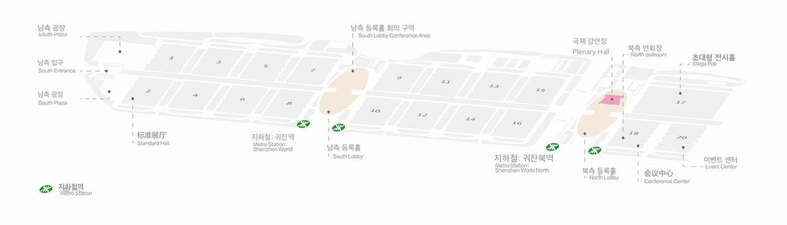

전시장 소개

선전 국제회의전시센터(Shenzhen World Exhibition & Convention Center, 약칭 Shenzhen World)는 선전시 정부가 투자한 대형 사업으로, 웨강아오 대만구의 랜드마크입니다. 새 시대 선전의 대외 개방을 넓히는 중요한 플랫폼이자, 대만구의 핵심 엔진 기능과 주변 지역 견인 역할을 뒷받침하는 시설입니다.
1기 부지는 121.42만㎡, 총 건축면적은 160.05만㎡, 실내 전시면적은 40만㎡이며, 전체 완공 후 실내 전시면적은 50만㎡가 됩니다. 2016년 9월 착공해 2019년 9월 준공했고 2019년 11월 문을 열었습니다. 전시, 회의, 행사(경기·공연), 식음료, 상업 기능을 갖춘 초대형 복합 전시시설입니다.
선전시 바오안구 푸하이 가도 잔청로 1호에 있으며 선전공항과 가깝습니다. 웨강아오 대만구의 중심, 광저우-선전-홍콩 핵심 회랑과 동서 발전 회랑이 만나는 곳이자 광저우·포산·자오칭, 선전·둥관·후이저우, 주하이·중산·장먼 3대 도시권의 교차점입니다.

전시장은 길게 뻗은 '생선뼈' 구조입니다. 남북 1.75km 길이의 2층 중앙 회랑이 모든 등록홀, 전시홀, 회의 구역, 식음료 구역을 연결합니다.
전시홀은 모두 19개로 중앙 회랑을 따라 대칭으로 배치돼 있습니다. 남쪽에 표준 전시홀 16개(각 2만㎡), 북쪽에 다목적 전시홀 3개(5만㎡ 초대형 전시홀 1개, 2만㎡ 컨벤션센터 1개, 2만㎡ 이벤트센터 1개)가 있습니다. 주요 출입구는 5곳이며, 그중 남측 등록홀 동쪽과 북측 등록홀 동쪽 입구가 지하철과 바로 연결됩니다.